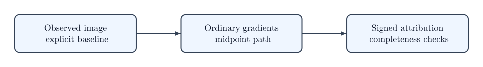
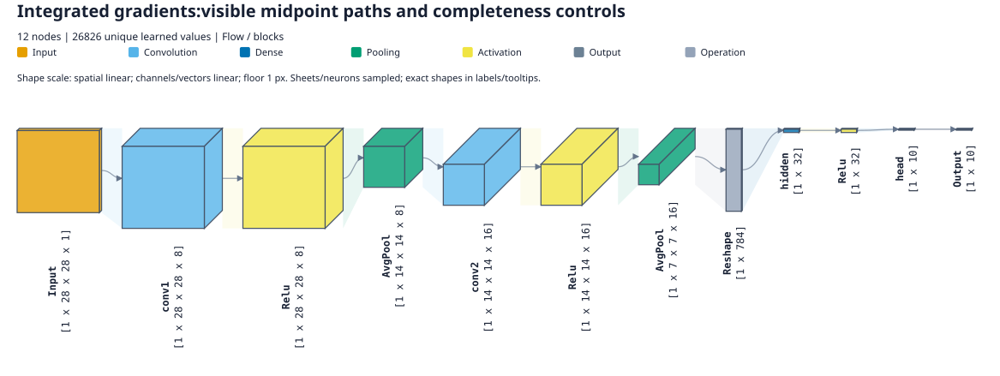
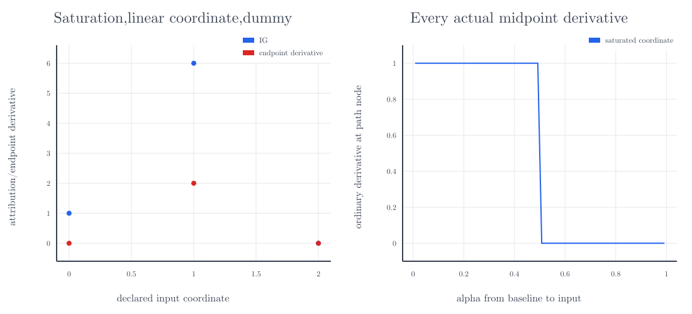
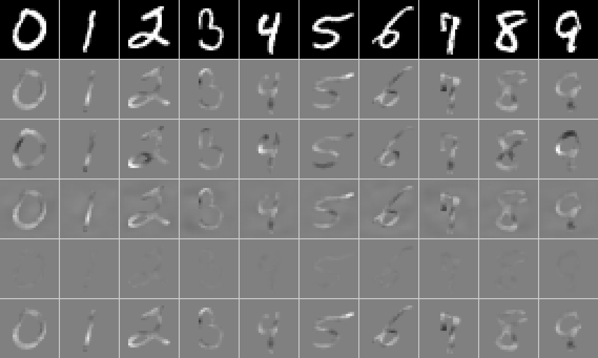
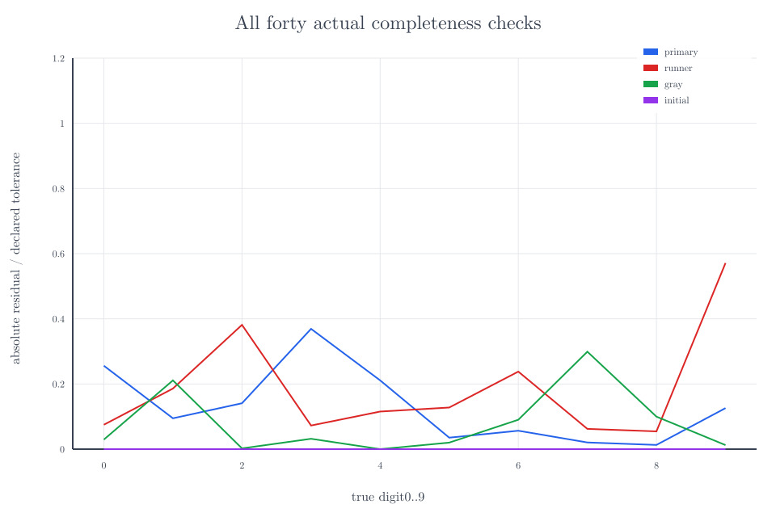

Integrated gradients:visible midpoint paths and completeness controls
Abstract
An endpoint derivative may miss a feature after a classifier score saturates. Integrate ordinary fixed-target derivatives from an explicit baseline to each genuine MNIST image,then check every numerical completeness residual and baseline,target and initialization control.
Source example: examples/cpp/source/nn/1_convolutional_neural_networks/1.11_interpretability/integrated_gradients.cpp.
The method
For a fixed raw scoreFand baseline x0,straight-line attribution integrates each ordinary coordinate derivative along the path:
The equality follows by the chain rule and fundamental theorem along the path,including piecewise-linear regions almost everywhere. Finite midpoint quadrature approximates the integral;the baseline and target define the attribution question. All numerical preprocessing,derivatives,integrals,checks and plots remain tensors;no optimizer is needed for this frozen-model numerical integration.
The concept diagram below is drawn by dm::graphics::Diagram. Its editable C++
source is the complete block below; regeneration uses the same datamunge toolchain
as the numerical examples. Exports consume the saved local SVG.
#include <dm/dm.hpp>
int main() {
std::filesystem::create_directories("build");
dm::graphics::Diagram diagram;
diagram.node("n0", {0.0, 0}, "Observed image\n explicit baseline");
diagram.node("n1", {5.2, 0}, "Ordinary gradients\n midpoint path");
diagram.node("n2", {10.4, 0}, "Signed attribution\n completeness checks");
diagram.edge("n0", "n1").edge("n1", "n2");
diagram.save_svg("build/integrated_gradients_concept.svg");
}
Fixed raw scores and a chosen baseline
A local endpoint derivative can vanish after a score saturates. Integrated gradients compare an observed inputxto an explicit baselinex0and accumulate ordinary derivatives along x0+alpha*(x-x0). The baseline is part of the question; black pixels and grey.1pixels can give different attributions for the same digit. Targets stay fixed along the entire path. No softmax,guided gate or loss gradient enters this report.
Restore the exact shared MNIST classifier and its actual initial arrays from [vanilla saliency](vanilla_saliency.mepml),where96visible tensor Adam updates select the classifier on validation. Its88%held-out accuracy includes24errors. No classifier fitting occurs here. The same ten first held-out occurrences of true digits0..9and their original source IDs are retained for all controls.
Executed tensor architecture
The diagram shows the forward MNIST CNN that the attribution or feature-optimization method inspects; the attribution algorithm is explained separately.
This figure executes the inference configuration shown in the code, using a zero-valued shape probe without fitting or loading a checkpoint. Named stage boundaries group whole subgraphs where available; other nodes retain functional-layer detail. Exact batch-inclusive shapes and reachable parameter totals come from the trace. Shared linear scales map spatial dimensions and channel counts to blocks; the one-pixel visibility floor is disclosed in the legend. Labels use compact monospace text, rotate counterclockwise and sit beside their own glyphs. Arrows flow left to right; wide diagrams scroll at native size on the website.
#include <dm/dm.hpp>
int main() {
namespace n = dm::nn;
namespace m = n::models;
n::set_num_threads(2);
std::filesystem::create_directories("build");
n::ParameterStore p(1103);
n::Module architecture_model(
[&](const n::Tensor& image) { return m::SaliencyCnn(p, image).logits; },
"Integrated gradients:visible midpoint paths and completeness controls");
n::ModelPlotOptions options;
options.style = n::ModelPlotStyle::Flow;
options.detail = n::ModelPlotDetail::Blocks;
options.labels = {.type = n::ModelPlotLabel::NameAndShape, .size = 12, .wrap = 24};
options.spacing = {.layer = 24, .lane = 12, .label = 8, .margin = 20};
options.sizing.spatial_size = 96;
options.sizing.channel_size = 42;
options.sizing.minimum_extent = 1;
options.opacity = .8;
const auto diagram = architecture_model.plot(n::zeros({1, 28, 28, 1}), options);
diagram.save_svg("build/integrated_gradients_architecture.svg");
std::print(
"{} displayed nodes; {} reachable learned values.\n",
diagram.nodes().size(),
diagram.parameter_count());
}12 displayed nodes; 26826 reachable learned values.

A saturated score with exact midpoint attributions
ForF(x)=clip(x0,0,1)+2*x1and baseline0,the first observed row[2,3,9]has attributions[1,6,0]. Its first endpoint derivative is0but its integrated attribution is1;the third coordinate is a dummy. The second row[.5,-1,4] has[.5,-2,0],summing-1.5. Equivalent ReLU implementations and callback batches 1versus7give the same results. Equal input/baseline gives exactzero.
#include <dm/dm.hpp>
int main() {
namespace n = dm::nn;
namespace m = n::models;
const auto input = n::from_vector(std::vector<float>{2, 3, 9, .5f, -1, 4}, {2, 3}),
base = n::zeros({2, 3}), targets = n::zeros({2}, n::DType::Int32);
auto score = [](const n::Tensor& x) {
return n::clip(n::slice_axis(x, 1, 0, 1), 0., 1.) + n::slice_axis(x, 1, 1, 2) * 2.;
};
auto derivative = [&](const n::Tensor& p, const n::Tensor&) {
auto x = p.detach().clone().requires_grad_();
return n::grad(n::sum(score(x)), {x})[0].detach();
};
const auto out = m::IntegratedGradients(input, base, targets, 64, 7, derivative);
std::print(
"Declared exact attributions {},sums {},endpoint derivatives {}.\n",
out.attribution,
n::sum(out.attribution, {1}),
derivative(input, targets));
auto a = dm::graphics::RPlot::create(), b = dm::graphics::RPlot::create();
a.points(
n::arange(0, 3).to_vector<double>(),
n::select(out.attribution, 0, 0).to_vector<double>(),
"IG",
{37, 99, 235})
.points(
n::arange(0, 3).to_vector<double>(),
n::select(derivative(input, targets), 0, 0).to_vector<double>(),
"endpoint derivative",
{220, 38, 38})
.title("Saturation,linear coordinate,dummy")
.x_label("declared input coordinate")
.y_label("attribution/endpoint derivative");
b.lines(
out.nodes.to_vector<double>(),
n::select(n::select(out.path_gradient, 1, 0), 1, 0).to_vector<double>(),
"saturated coordinate",
{37, 99, 235})
.title("Every actual midpoint derivative")
.x_label("alpha from baseline to input")
.y_label("ordinary derivative at path node");
auto layout = dm::graphics::RLayout::create(1, 2);
layout.add(a).add(b).size(1100, 500).fit_panels().save_svg(
"build/integrated_gradients_fixture.svg");
}Declared exact attributions float32[2, 3] [[1, 6, 0], [0.5, -2, 0]],sums float32[2] [7, -1.5],endpoint derivatives float32[2, 3] [[0, 2, 0], [1, 2, 0]].

Real midpoint quadrature and all baseline/target/weight controls
Tensor Double arithmetic constructs path points at alpha=(k+.5)/steps,then Float32model evaluation yields ordinary gradients. All actual path derivatives are retained in step-major/case-minor order. Double means produce Float32final attributions. The callback batches at most32path points;its gradient sums fixed raw scores to preserve per-observation scale.
Start64nodes;check all40case/control completeness residuals against the declared numerical tolerance.01+.01*abs(scorechange). Double the quadrature until all pass or512nodes,then fail explicitly if the tolerance is still unmet. This is a numerical verification rule,not a new fitting or model-selection process. The32node primary result remains a fixed coarse reference. Refinement need not improve every individual residual monotonically at ReLU boundaries.
#include <dm/dm.hpp>
int main() {
namespace n = dm::nn;
namespace m = n::models;
n::set_num_threads(2);
std::filesystem::path cache;
if (const auto* p = std::getenv("DATAMUNGE_DATA_DIR"))
cache = p;
else if (const auto* p = std::getenv("XDG_CACHE_HOME"))
cache = std::filesystem::path(p) / "datamunge/datasets";
else
cache = std::filesystem::path(std::getenv("HOME")) / ".cache/datamunge/datasets";
dm::datasets::prepare_example_data("mnist-assets", cache.string());
const auto pools = m::LoadSaliency(cache / "saliency");
const auto& fit = pools[0];
const auto& validation = pools[1];
const auto& test = pools[2];
n::ParameterStore p(1103);
{
n::NoGradGuard guard;
m::SaliencyCnn(p, n::zeros({1, 28, 28, 1}));
}
auto predict = [&](const n::Tensor& images) {
n::NoGradGuard guard;
std::vector<n::Tensor> parts;
for (std::int64_t start = 0; start < images.size(0); start += 32)
parts.push_back(
m::SaliencyCnn(
p,
n::slice_axis(images, 0, start, std::min<std::int64_t>(start + 32, images.size(0))))
.logits);
return n::concat(parts, 0);
};
for (const auto& [key, value] : n::load_npz("build/vanilla_saliency_best.npz"))
p.set(key, value.clone());
std::vector<std::int64_t> chosen;
const auto labels = test.labels.to_vector<int>();
for (int digit = 0; digit < 10; ++digit) {
const auto it = std::find(labels.begin(), labels.end(), digit);
chosen.push_back(it - labels.begin());
}
const auto examples = m::SaliencyRows(test, chosen);
const auto z = predict(examples.images);
const auto sorted = n::argsort(z, true);
const auto targets = n::select(sorted, 1, 0).to(n::DType::Int32),
runners = n::select(sorted, 1, 1).to(n::DType::Int32);
const auto before = p.flatten();
n::ParameterStore random(1103);
{
n::NoGradGuard guard;
m::SaliencyCnn(random, n::zeros({1, 28, 28, 1}));
}
for (const auto& [key, value] : n::load_npz("build/vanilla_saliency_initial.npz"))
random.set(key, value.clone());
const auto random_before = random.flatten();
auto gradient = [&](const n::Tensor& points, const n::Tensor& classes) {
return m::VanillaInputGradient(
[&](const n::Tensor& x) { return m::SaliencyCnn(p, x).logits; }, points, classes);
};
auto initial_gradient = [&](const n::Tensor& points, const n::Tensor& classes) {
return m::VanillaInputGradient(
[&](const n::Tensor& x) { return m::SaliencyCnn(random, x).logits; }, points, classes);
};
const auto black = n::zeros(examples.images.shape()),
gray = n::full(examples.images.shape(), double(.1f));
const auto coarse = m::IntegratedGradients(examples.images, black, targets, 32, 32, gradient);
std::vector<m::IntegratedResult> values;
std::vector<n::Tensor> deltas, residuals;
const std::vector<std::string> names{"primary", "runner", "gray", "initial"};
int steps = 64;
for (;;) {
values.clear();
deltas.clear();
residuals.clear();
bool complete = true;
for (int control = 0; control < 4; ++control) {
const auto base = control == 2 ? gray : black, classes = control == 1 ? runners : targets;
const auto fn = control == 3 ? m::InputGradientFunction(initial_gradient)
: m::InputGradientFunction(gradient);
const auto integral = m::IntegratedGradients(examples.images, base, classes, steps, 32, fn);
n::Tensor scores, baseline_scores;
{
n::NoGradGuard guard;
auto& store = control == 3 ? random : p;
scores = m::SaliencyScore(m::SaliencyCnn(store, examples.images).logits, classes)
.to(n::DType::Float64);
baseline_scores =
m::SaliencyScore(m::SaliencyCnn(store, base).logits, classes).to(n::DType::Float64);
}
const auto delta = scores - baseline_scores,
residual = n::sum(integral.attribution.to(n::DType::Float64), {1, 2, 3}) - delta;
const auto tolerance = .01 + n::abs(delta) * .01;
complete = complete && n::all(n::less_equal(n::abs(residual), tolerance)).item<bool>();
values.push_back(integral);
deltas.push_back(delta);
residuals.push_back(residual);
}
if (complete)
break;
if (steps == 512)
return 1;
steps = std::min(512, steps * 2);
}
const auto endpoint = gradient(examples.images, targets) * examples.images;
const auto single = m::IntegratedGradients(
n::slice_axis(examples.images, 0, 0, 1),
n::slice_axis(black, 0, 0, 1),
n::slice_axis(targets, 0, 0, 1),
steps,
1,
gradient);
const auto batching =
n::max(n::abs(single.attribution - n::slice_axis(values[0].attribution, 0, 0, 1)));
if (batching.item() > 2e-6 || before != p.flatten() || random_before != random.flatten())
return 1;
std::print(
"Selected{}midpoints for all40paths;single/batch "
"{:.9g};all16learned/controlarrays unchanged.\n",
steps,
batching.item());
n::NamedTensors arrays{
{"images", examples.images},
{"source_ids", examples.source},
{"targets", targets},
{"runners", runners},
{"black", black},
{"gray_baseline", gray},
{"endpoint_times_input", endpoint},
{"coarse_attribution", coarse.attribution},
{"coarse_path_gradient", coarse.path_gradient},
{"nodes", values[0].nodes}};
auto peak = n::max(n::abs(endpoint));
for (const auto& v : values)
peak = n::maximum(peak, n::max(n::abs(v.attribution)));
std::vector<n::Tensor> display{examples.images};
for (int i = 0; i < 4; ++i) {
const auto prefix = names[i] + "_";
arrays.push_back({prefix + "attribution", values[i].attribution});
arrays.push_back({prefix + "mean_gradient", values[i].mean_gradient});
arrays.push_back({prefix + "path_gradient", values[i].path_gradient});
arrays.push_back({prefix + "delta", deltas[i]});
arrays.push_back({prefix + "residual", residuals[i]});
display.push_back(values[i].attribution / (peak * 2) + .5);
}
display.push_back(endpoint / (peak * 2) + .5);
n::save_npz("build/integrated_gradients_maps.npz", arrays);
std::print(
"Original case IDs {},fixed target/runner {}/{}.\n", examples.source, targets, runners);
std::print(
"Primary L1changes vs endpoint/runner/gray/initial {:.9g}/{:.9g}/{:.9g}/{:.9g}.\n",
n::sum(n::abs(values[0].attribution - endpoint)).item(),
n::sum(n::abs(values[0].attribution - values[1].attribution)).item(),
n::sum(n::abs(values[0].attribution - values[2].attribution)).item(),
n::sum(n::abs(values[0].attribution - values[3].attribution)).item());
n::save_image_grid(
n::concat(display, 0), "build/integrated_gradients_maps.png", 10, 0, 1, 2, .8, 4);
}Selected64midpoints for all40paths;single/batch 0;all16learned/controlarrays unchanged. Original case IDs int32[10] [66921, 63380, 68936, 62280, 62094, 65222, 61209, 61721, 69402, 62570],fixed target/runner int32[10] [0, 1, 2, 3, 9, 5, 6, 7, 8, 9]/int32[10] [2, 6, 3, 5, 4, 9, 1, 9, 5, 4]. Primary L1changes vs endpoint/runner/gray/initial 7.99707842/84.3102493/55.4018822/73.7057724.

Every completeness residual and the coarse reference
For each actual path, compare the sum of signed attributions with its own fixed-target raw-score difference F(x)-F(x0). Completeness measures numerical integration accuracy; it does not establish causal importance. The baseline changes both the integral and the endpoint difference, so each control must use its own right-hand side. All40 case/path rows remain visible. The computed tables compare32 and64 midpoint nodes for all four paths and retain nonzero residuals. Target, baseline and initial-weight controls expose the measured dependencies of this classifier rather than a universal explanation.
#include <dm/dm.hpp>
int main() {
namespace n = dm::nn;
std::map<std::string, n::Tensor> a;
for (const auto& [key, value] : n::load_npz("build/integrated_gradients_maps.npz"))
a.emplace(key, value);
const auto coarse =
n::sum(a.at("coarse_attribution").to(n::DType::Float64), {1, 2, 3}) - a.at("primary_delta");
std::print(
"| path | true digit | original source ID | raw score change | sum attribution | "
"residual | declared tolerance |\n|---|---:|---:|---:|---:|---:|---:|\n");
auto plot = dm::graphics::RPlot::create();
const std::vector<std::string> names{"primary", "runner", "gray", "initial"};
const std::vector<dm::graphics::RGB> colors{
{37, 99, 235}, {220, 38, 38}, {22, 163, 74}, {147, 51, 234}};
for (int path = 0; path < 4; ++path) {
const auto delta = a.at(names[path] + "_delta"), residual = a.at(names[path] + "_residual"),
tolerance = .01 + n::abs(delta) * .01;
for (int i = 0; i < 10; ++i)
std::print(
"| {} | {} | {} | {:.9g} | {:.9g} | {:.9g} | {:.9g} |\n",
names[path],
i,
a.at("source_ids").at({i}),
delta.at({i}),
delta.at({i}) + residual.at({i}),
residual.at({i}),
tolerance.at({i}));
plot.lines(
n::arange(0, 10).to_vector<double>(),
(n::abs(residual) / tolerance).to_vector<double>(),
names[path],
colors[path]);
}
std::print(
"Coarse32node max primary residual {:.9g};selected{}node max primary residual {:.9g}.\n",
n::max(n::abs(coarse)).item(),
a.at("nodes").numel(),
n::max(n::abs(a.at("primary_residual"))).item());
plot.title("All forty actual completeness checks")
.x_label("true digit0..9")
.y_label("absolute residual / declared tolerance")
.y_limits(0, 1.2);
plot.save_svg("build/integrated_gradients_completeness.svg");
}| path | true digit | original source ID | raw score change | sum attribution | residual | declared tolerance |
|---|---|---|---|---|---|---|
| primary | 0 | 66921 | 9.90870643 | 9.93663406 | 0.0279276337 | 0.109087064 |
| primary | 1 | 63380 | 3.08741927 | 3.09128986 | 0.00387059137 | 0.0408741927 |
| primary | 2 | 68936 | 8.87161516 | 8.88552377 | 0.0139086095 | 0.0987161516 |
| primary | 3 | 62280 | 3.18426128 | 3.19970786 | 0.0154465799 | 0.0418426128 |
| primary | 4 | 62094 | 2.18051761 | 2.18723047 | 0.00671285987 | 0.0318051761 |
| primary | 5 | 65222 | 6.01228979 | 6.00981619 | -0.00247359733 | 0.0701228979 |
| primary | 6 | 61209 | 2.56663239 | 2.56864913 | 0.00201673805 | 0.0356663239 |
| primary | 7 | 61721 | 1.67211151 | 1.67265919 | 0.000547679345 | 0.0267211151 |
| primary | 8 | 69402 | 6.62998474 | 6.6289988 | -0.000985940293 | 0.0762998474 |
| primary | 9 | 62570 | 3.39962667 | 3.40517066 | 0.00554399062 | 0.0439962667 |
| runner | 0 | 66921 | 4.66381716 | 4.65957471 | -0.0042424447 | 0.0566381716 |
| runner | 1 | 63380 | -0.130951107 | -0.128847628 | 0.00210347887 | 0.0113095111 |
| runner | 2 | 68936 | 3.49809761 | 3.51525343 | 0.0171558138 | 0.0449809761 |
| runner | 3 | 62280 | 2.17213777 | 2.17443766 | 0.00229989459 | 0.0317213777 |
| runner | 4 | 62094 | 2.06142935 | 2.06496174 | 0.00353238574 | 0.0306142935 |
| runner | 5 | 65222 | 0.966737211 | 0.969249907 | 0.00251269626 | 0.0196673721 |
| runner | 6 | 61209 | 1.39683592 | 1.40254028 | 0.00570436147 | 0.0239683592 |
| runner | 7 | 61721 | 0.674387753 | 0.67542944 | 0.00104168728 | 0.0167438775 |
| runner | 8 | 69402 | 2.96576121 | 2.96360033 | -0.00216088571 | 0.0396576121 |
| runner | 9 | 62570 | 0.694234401 | 0.703913161 | 0.00967876027 | 0.016942344 |
| gray | 0 | 66921 | 8.97444302 | 8.97152112 | -0.0029218958 | 0.0997444302 |
| gray | 1 | 63380 | 5.05123961 | 5.03847064 | -0.0127689658 | 0.0605123961 |
| gray | 2 | 68936 | 6.80671716 | 6.80689707 | 0.000179909862 | 0.0780671716 |
| gray | 3 | 62280 | 1.72267699 | 1.72181041 | -0.000866577933 | 0.0272267699 |
| gray | 4 | 62094 | 1.83436835 | 1.8343677 | -6.4485539e-07 | 0.0283436835 |
| gray | 5 | 65222 | 4.93765819 | 4.93884858 | 0.00119038452 | 0.0593765819 |
| gray | 6 | 61209 | 3.48576498 | 3.48171891 | -0.00404606552 | 0.0448576498 |
| gray | 7 | 61721 | 0.942369938 | 0.948179306 | 0.00580936781 | 0.0194236994 |
| gray | 8 | 69402 | 5.24545771 | 5.25168967 | 0.00623195726 | 0.0624545771 |
| gray | 9 | 62570 | 3.05347741 | 3.05398065 | 0.000503239411 | 0.0405347741 |
| initial | 0 | 66921 | 0.0531620421 | 0.053162142 | 9.99461918e-08 | 0.0105316204 |
| initial | 1 | 63380 | -0.0756736994 | -0.0756737806 | -8.11796781e-08 | 0.010756737 |
| initial | 2 | 68936 | 0.48122403 | 0.481224194 | 1.64051016e-07 | 0.0148122403 |
| initial | 3 | 62280 | 0.334854513 | 0.334854585 | 7.12693691e-08 | 0.0133485451 |
| initial | 4 | 62094 | -0.439651787 | -0.439651815 | -2.7438773e-08 | 0.0143965179 |
| initial | 5 | 65222 | 0.83008343 | 0.830083485 | 5.47042873e-08 | 0.0183008343 |
| initial | 6 | 61209 | -0.0976542458 | -0.0976542261 | 1.97228474e-08 | 0.0109765425 |
| initial | 7 | 61721 | -0.053562656 | -0.0535627953 | -1.39244217e-07 | 0.0105356266 |
| initial | 8 | 69402 | -0.17578505 | -0.17578515 | -1.00221769e-07 | 0.0117578505 |
| initial | 9 | 62570 | -0.54129684 | -0.541296814 | 2.5967438e-08 | 0.0154129684 |
Coarse32node max primary residual 0.0301409423;selected64node max primary residual 0.0279276337.

Regenerate adjacent views from this run
Conclusion
Saturation and dummy-coordinate fixtures make the mechanism hand-checkable. Genuine fixed-weight MNIST paths retain every sampled derivative and all completeness errors;baseline,target and initialization changes alter the question and the result. Numerical completeness is an integration check,not causal validation.
References
- [Sundararajan,Taly and Yan(2017),Axiomatic Attribution for Deep Networks](https://arxiv.org/abs/1703.01365).